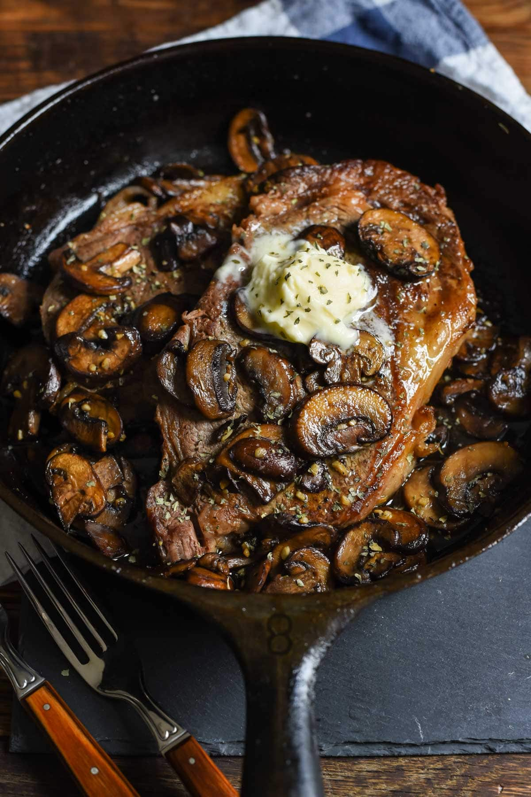

Cast Iron Ribeye With Mushrooms Recipe

Description
Once you make steak in a cast iron skillet you’ll never go back! This Cast Iron Ribeye with Garlic Mushrooms
takes about 20 minutes to make but is worthy of any special occasion.
Ingredients
- 2 boneless ribeye steaks, 1-1.5 inches thick
- Vegetable oil
- Kosher salt and freshly ground black pepper
- 3 Tablespoons butter, divided
- 8 ounces sliced mushrooms
- 2 cloves garlic, minced
- Fresh parsley (optional)
Steps
- Preheat the oven to 425 degrees.
- Remove the steak from the packaging and allow it to rest at room temperature while the oven preheats. Brush
both sides of the steak with vegetable oil and sprinkle generously with salt and pepper.
- Place a cast iron skillet over medium high heat and coat with about a Tablespoon of vegetable oil. Heat the
pan until the oil is shimmering and droplets of water sizzle in the pan. Add the steaks to the pan and allow
them to cook until seared on one side, about 3-4 minutes. Flip the steaks over and then place in the oven to
continue cooking until the internal temperature reaches 145 degrees for medium, or about another 4-6
minutes. Remove the steaks from the oven, transfer to a plate (preferably a warm plate!) and place a
Tablespoon of butter on each steak. Tent with foil and allow to rest for at least 10 minutes.
- Meanwhile, make the mushrooms. Melt 2 Tablespoons of the butter in a large skillet over medium heat. Add the
mushrooms and allow them to cook undisturbed until well browned on one side. Flip them over and continue to
saute until the mushrooms are soft and browned. Stir in the garlic and cook for another minute, or until
fragrant. Serve the steaks with the mushrooms on top.